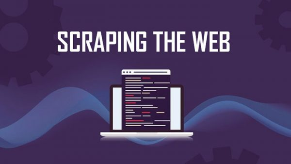

In this project, Health care ficticious dataset that includes New York state-wide hospital discharge data for 2016 was employed and elective hip replacement surgery was the main reason for patient hospital stay.

The mental health of students is important, regardless of their level and area of study. This analysis focused on the factors that influence students' mental health.

This project involves creating a Python web scraper to retrieve job listings from Wuzzuf, a popular job search platform. Using the requests and Beautiful Soup libraries,This project offers customers a simple and fast way to collect job-related data from Wuzzuf, allowing them to make more informed decisions during the job search process.